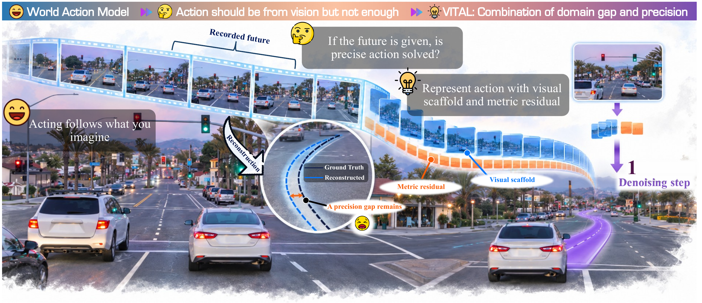
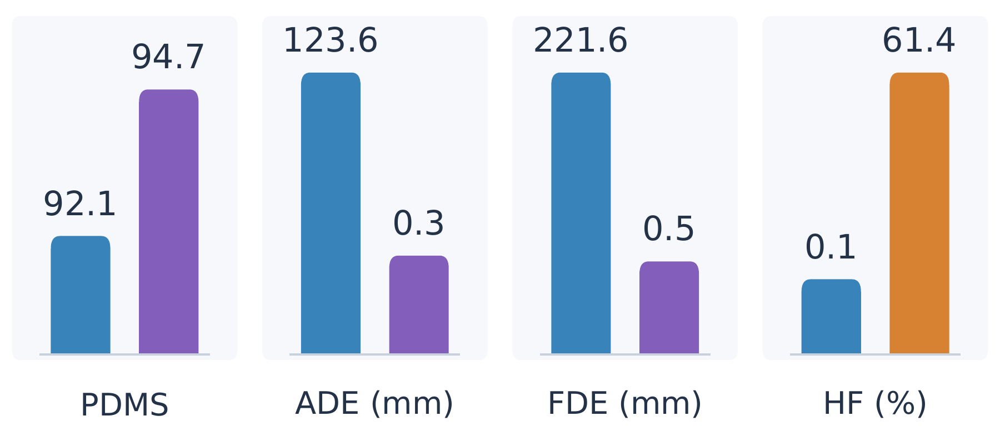
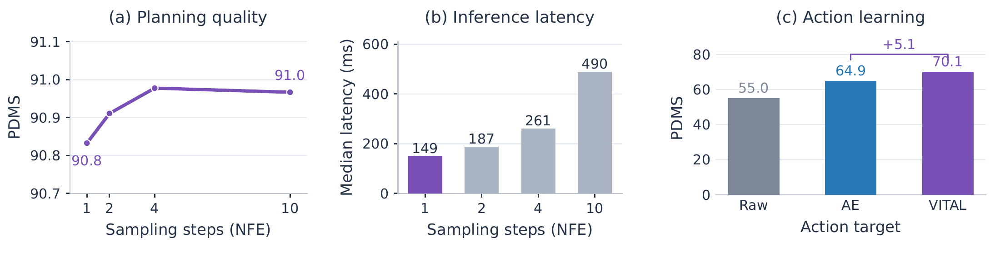
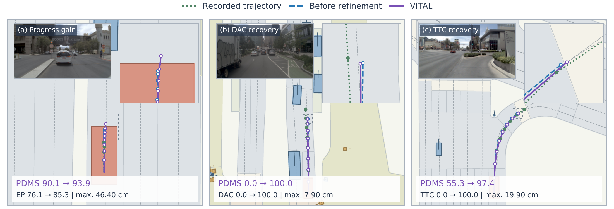

01
Find the representation gap
Actions should inherit the scene's motion, instead of learning an unrelated coordinate system.
VITAL turns visual motion into a language for action: a scene-grounded scaffold paired with a normalized metric residual.
One flow evaluation predicts both components. A bounded residual update refines local precision while preserving the visual plan.

A short visual walkthrough of how VITAL connects visual motion to precise action. Plays step by step when in view.
World-action models anticipate visual dynamics, yet their action targets are often defined independently. What if visual motion itself could define the action representation?
Steps 2–4 explain target construction with recorded images and a demonstrated trajectory. Steps 5–6 use only deployment context. Geometric offsets are exaggerated for visibility.
Scroll through the chain of observations that shaped VITAL. The large panel follows your place in the story.
World-action models predict useful motion, but their action coordinates are often chosen independently of visual dynamics.
Actions should inherit the scene's motion, instead of learning an unrelated coordinate system.
The visual scaffold is smooth and meaningful, yet centimeter-scale errors still matter near road boundaries.
Two paired token groups give small corrections their own learning scale.
One action evaluation, one trajectory: 90.8 PDMS at 149 ms, including image encoding and residual correction.
One-step before/after examples show local corrections to progress, road compliance, and TTC while preserving the predicted visual scaffold.
Future images supervise the tokenizer during training. At deployment, VITAL uses only the current front-camera image, ego state, and navigation command.
1 · Visual scaffold. A visual encoder turns recorded image motion into four motion tokens and a decoder maps them to a trajectory.
2 · Paired residual. The remaining trajectory error is centered, projected into a PCA basis, and scaled so small metric corrections are learnable.
3 · Joint action learning. A flow-matching action expert predicts both token groups from deployment context, then a single Euler update decodes the plan.
4 · Residual refinement. A bounded actor changes only residual coordinates, leaving the predicted visual scaffold fixed.
Front image + ego state + navigation command.
Visual tokens and residual tokens from one flow evaluation.
Frozen decoder returns the four-second pose sequence.
One residual update improves local execution.
Each pair uses the same RGB sequence and fixed metric axes. The first clip shows the visual scaffold; the second adds its paired residual.
Clean-code reconstruction leaves 0.241 m ADE in this example. The maneuver is visible; local metric detail is not yet closed.
The paired residual brings this example to 0.523 mm ADE. The full validation diagnostic is 0.311 mm ADE.
The same scale-consistent gap appears again: 0.104 m ADE before the residual.
The paired residual reduces this example to 0.904 mm ADE.
All policies use one generated trajectory. The v2 results are a no-retraining transfer of the v1-trained policy.
NAVSIM v1 · navtest · NFE 1
Final VITAL policy.
NAVSIM v2 · navtest · NFE 1
Corrected scoring, no retraining.
NAVSIM v2 · navhard · NFE 1
Reactive two-stage continuation.
| Protocol | NFE / plans | Score |
|---|---|---|
| NAVSIM v1 navtest · final policy | 1 / 1 | 90.8 PDMS |
| NAVSIM v1 navtest · final policy | 10 / 1 | 91.0 PDMS |
| NAVSIM v2 navtest · no retraining | 1 / 1 | 91.1 EPDMS |
| NAVSIM v2 navhard · no retraining | 1 / 1 | 38.6 EPDMS |
With recorded images and a ground-truth paired residual, ADE falls from 123.6 to 0.3 mm and FDE from 221.6 to 0.5 mm, as rounded in the current paper figure. Reconstruction PDMS rises from 92.1 to 94.7.
The mean x/y high-frequency velocity-energy fraction is 0.1% for the visual scaffold and 61.4% for the residual. This describes their measured behavior: the residual encodes whatever error remains, rather than a prescribed frequency band.


Panel (c) compares action targets after one training pass, before residual RL: VITAL reaches 70.1 PDMS, Trajectory AE 64.9, and raw trajectories 55.0. The paper reports a 5.1-point gain over AE using unrounded scores.
Panels (a–b) evaluate the final policy separately: one evaluation takes 149 ms versus 490 ms for ten, a 3.29× speedup. Timing includes image encoding and residual correction at batch size one on an RTX 4090.
These six browser-playable clips show dynamic RGB, trajectory overlays, fixed-scale BEV, and per-frame diagnostics. Each contains 24 independent NFE = 1 predictions.
Mean ADE: 0.583 m.
Mean ADE: 0.500 m.
Mean ADE: 0.462 m.
Mean ADE: 0.316 m.
Mean ADE: 0.452 m.
Mean ADE: 0.396 m.
The paper’s one-step before/after examples show improved progress (a), restored drivable-area compliance (b), and improved time-to-collision (c). Panel (b) uses a maximum displacement of 7.9 cm and raises that scene’s PDMS from 0.0 to 100.0.
The action generator and codec stay frozen. A deterministic, bounded correction updates only residual coordinates. These examples illustrate local improvements; the method does not guarantee better reward or safety for every correction.

A project citation is provided below. The arXiv identifier will be added when available.
@misc{liang2026vital,
title = {VITAL: From Visual Motion to Precise Action},
author = {Alan Liang and Youquan Liu and Mingxiao Li and Wei Chow and Lingdong Kong and Yue Liao and Dongyue Lu and Yu Yang and Wei Yin and Runnan Chen},
year = {2026},
url = {https://worldbench.github.io/vital.html}
}